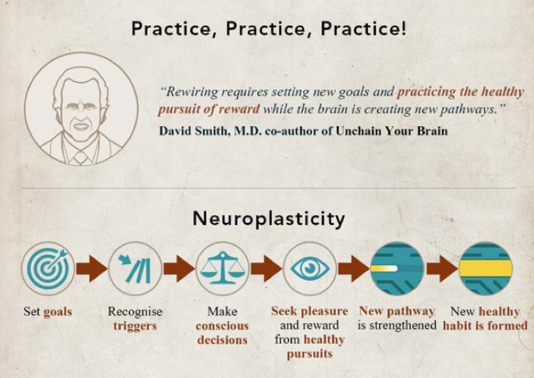
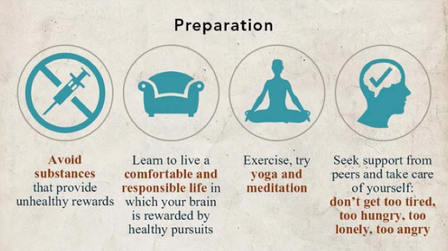
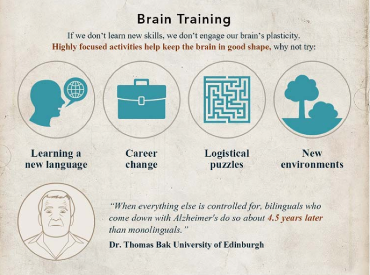

Neuroplasticity and Growth Mindset
Neuroplasticity
Neuroplasticity refers to the brain's ability to adapt.
Dr. Campbell puts it:
"It refers to the physiological changes in the brain that happen as the result of our interactions with our
environment. From the time the brain begins to develop in utero until the day we die, the connections among
the cells in our brains reorganize in response to our changing needs. This dynamic process allows us to learn
from and adapt to different experiences." - Celeste Campbell (n.d.)
Our brains are truly extraordinary. When we learn something new, we create new connections between our neurons.
We rewire our brains to adapt to new circumstances. This happens on a daily basis, but it's also something that
we can encourage and stimulate.
Growth Mindset
People either have a “growth mindset” or they have a “fixed mindset.”
These ideas are based on the research findings of psychologist Carol Dweck. she describes people with a growth mindset as:
“Individuals who believe their talents can be developed (through hard work, good strategies, and input from others) have a growth mindset.
They tend to achieve more than those with a more fixed mindset (those who believe their talents are innate gifts).”
Our mindset likely varies from area to area. Our views may be different for artistic talent, intelligence,
personality, or creativity. Whatever mindset we have in a particular area will guide us in that area.
Engaging with these principles of neuroplasticity and growth mindsetwill help me realise that my brain has the capacity to learn
new thoughts, concepts and habits. Having a growth mindset encourages learning and effort. If we believe we can improve at
something, we will be much more driven to learn and practice. With practice, neural networks grow new connections, strengthen existing ones, and
build insulation that speeds transmission of impulses. Through these concepts I've got encouraged a lot.
As learning programming is a foreign concept to me, so I have a new belief that it will
be possible to understand the programming principles.
What are some of the ways to increase your Neuroplaticity


